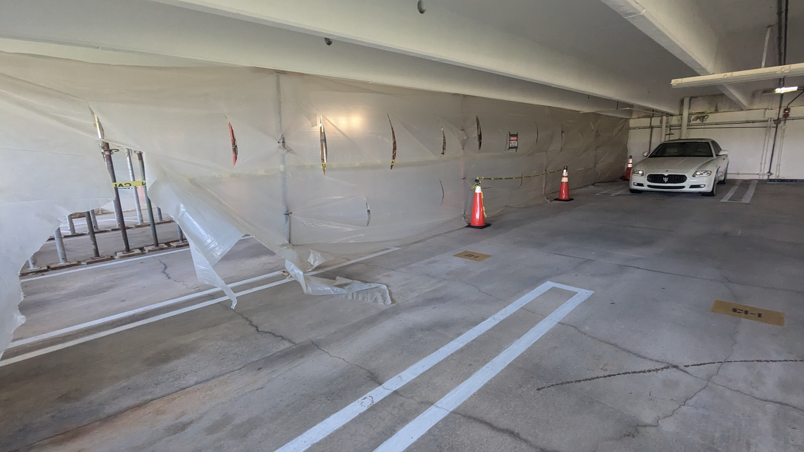
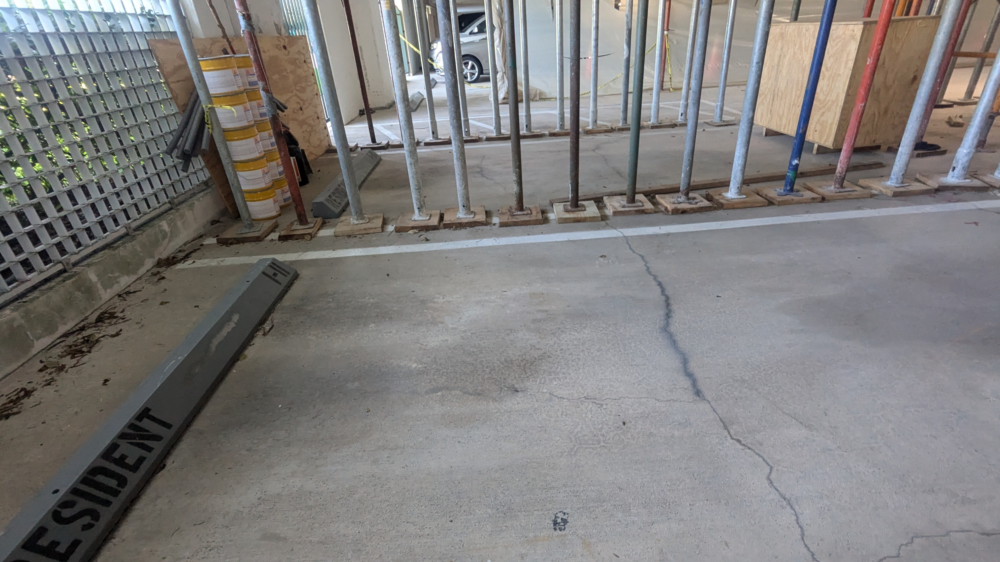

Parking Garage Structural Repair Project (2025)
This page summarizes the documented scope, costs, contractor agreements, engineering oversight, and timeline for the 2025 parking garage structural repair project.
Based on the records summarized below, the documented cost-to-scope contrast raises serious concerns about project management efficiency.
All amounts and dates shown on this page are drawn from engineering proposals, contractor agreements, and project documentation available to residents.
Documented Financial Exposure
This documented spending level for a localized repair zone raises serious concern about board stewardship and fiscal responsibility.
Garage Repair Project Cost Summary
| Component | Amount |
|---|---|
| Engineering Inspection | $4,800 |
| Double Tee Flange Repair | $34,927 |
| Double Tee Slab Jacking | $60,538 |
Total documented project exposure: $100,265
The garage repair project involved engineering inspection and two contractor agreements. The documented contract amounts are summarized above based on project documentation available to residents.
Documented Observations
- Documented total exposure is $100,265 for repair work limited to a localized garage section.
- $95,465 of the total was allocated to two contractor agreements.
- The largest single contract line is $60,538 for slab jacking work.
- Residents can reasonably question whether this spending level reflects careful fiscal stewardship for the documented scope.
These observations are derived from documented contract and engineering records summarized on this page.
What is the $60,538 Slab Jacking Contract?
| Item | Amount |
|---|---|
| General Conditions | $4,000 |
| Labor | $21,080 |
| Equipment | $35,458 |
| Total | $60,538 |
According to the contractor proposal, the slab jacking agreement includes labor, equipment, and general project conditions associated with structural stabilization work.
Most of the contract value is attributed to labor and equipment required to perform slab leveling and structural support work.
Scope of Work vs Project Cost
Based on the engineering proposal and contractor agreements, the project scope included:
- Structural inspection of the damaged garage area
- Review of structural drawings
- Engineering evaluation of the damage
- Development of repair specifications
- Installation of temporary structural shoring
- Repair of double-tee flange areas
- Slab jacking and leveling work
- Welding and reinforcement of structural connections
- Sealant and joint repairs
- Follow-up engineering inspections
The work was limited to a specific section of the garage structure.
| Category | Summary |
|---|---|
| Work Area | Localized section of parking garage |
| Repair Type | Structural repair and stabilization |
| Engineering Fee | $4,800 |
| Repair Contracts | $95,465 |
| Total Documented Project Exposure | $100,265 |
This documented spending level, compared with a localized work area, may reasonably raise concern for residents about cost efficiency and project management performance.
Why This May Raise Concern
The documented records show a six-figure project exposure for a limited structural repair area.
That cost-to-scope contrast may indicate inefficient planning, procurement, scheduling, or execution.
From a resident accountability perspective, this pattern can be viewed as a serious stewardship warning signal.
This concern-based framing is interpretive and grounded in the documented amounts, scope description, and timeline shown on this page.
Engineering Assessment and Oversight
The documented engineering assessment established the technical basis for the repair scope and follow-up oversight.
- Structural inspection of the affected garage section
- Review of existing structural drawings
- Repair specification development
- Follow-up engineering inspection activity during repair execution
| Engineering Item | Documented Amount |
|---|---|
| Initial structural engineering assessment | $4,800 |
Residents may evaluate whether the combined engineering and contractor spend produced outcomes proportionate to the documented project scope.
Project Timeline
| Date | Event |
|---|---|
| Jan 23, 2025 | Engineering inspection proposal issued |
| Apr 4, 2025 | Contractor repair proposals issued |
| Apr 28, 2025 | Contracts executed |
| 2025 | Structural repair work performed |
The documented timeline establishes when proposals and contracts were issued and executed; residents can compare this timeline with the cost totals above.
Project Work Area Documentation
Temporary Structural Shoring
Temporary structural shoring installed to support the slab during repair work.
Work Area Containment
Plastic containment barriers used to isolate the work area.
Concrete Slab Repair Areas
Concrete slab areas where repair work was performed.





Project Video Documentation
If the embedded video does not load, open it directly on YouTube.
Project Summary
| Item | Description |
|---|---|
| Project Type | Localized structural repair |
| Work Area | Parking garage concrete slab system |
| Engineering Oversight | Structural inspection and repair specifications |
| Contractor Agreements | Two contracts totaling $95,465 |
| Total Documented Cost | ~$100,265 |
Summary takeaway: the documented project cost is substantial relative to the localized scope described in the project records.
Questions Residents May Consider
Residents reviewing the documentation may wish to consider several questions when evaluating the project:
- Was the total documented cost proportionate to the visible scope of work?
- Were competitive vendor proposals obtained for both repair contracts?
- How long did the repair work take relative to the contract values?
- Were engineering inspections and contractor services coordinated efficiently?
This page presents documented records so residents can evaluate whether project execution appears efficient and proportionate.